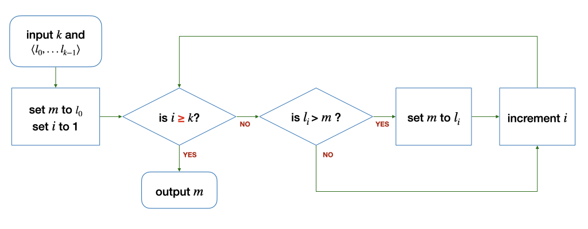
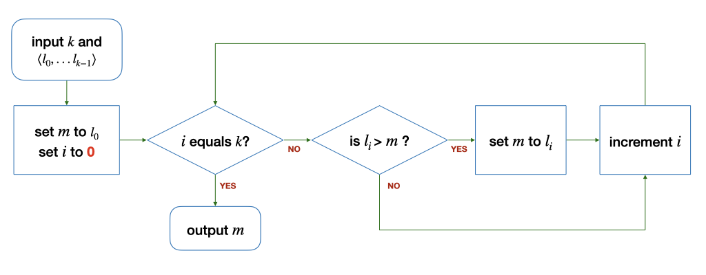

Unit 2: Computational Problems and Algorithms
Learning Outcomes:
After this unit, students should:
- be able to differentiate between a computational and a non-computational problem;
- understand the basic terminologies: computational problem-solving, algorithm, flowchart, debugging, testing, variables, value, assignment;
- be familiar with the algorithm to find the maximum among a list of numbers;
- be able to express an algorithm using a flowchart;
- be able to trace through flowcharts that involves branching, looping, and updates of variables;
- understand the notion of the "correctness" of an algorithm.
Computational Problems
We ended Unit 1 by saying that the most challenging part of CS1010 is how to write a program to solve a problem. Not all problems can be solved by computers, however. When programming, we are concerned mostly with solving computational problem.
A computational problem is a problem that can be solved step-by-step with a computer. These problems usually have a well-defined input, constraints, and conditions that the output must satisfy1. Here are some types of computational problems:
-
A decision problem is one where the answer is yes or no. For instance, "given a number \(n\), is \(n\) even?" is a decision problem. Some decision problems take more steps to solve than others. For instance, "given a number \(n\), is \(n\) prime?" takes more steps than just checking the parity of a number.
-
A search problem is one where the solution may consist of one or more answers that satisfy a given condition. For instance, we may want to find a path from one geographical location to another on a map.
-
A counting problem is one where the answer is the number of solutions to a search problem.
-
An optimization problem is one where the solution is the "best" possible solution, where the "best" can be defined differently. For instance, we may want to compute the fastest route from one location to another.
Questions such as "what is the meaning of life?" "do I look good in this outfit?"2 are not computational problems, because they do not have well-defined input, constraints, and conditions that the output must satisfy.
In CS1010 (followed by CS2040C and CS3230), you will learn how to solve computational problems computationally -- this means that you learn to come up with step-by-step instructions meant for computers that you can translate into computer programs, to solve a given problem.
Example: Finding the maximum
Let's start with a simple problem. Given a finite list \(L\) of \(k\) integers (\(k\) > 0), find the maximum integer from the list.
First, let's consider if this is a computational problem. The input is well-defined: we know what an integer is; we are told we have at least one integer in \(L\), and we have a finite number of them3.
Second, let's consider the output. What conditions must the output satisfy? First, it has to be equal or larger than every other integer in \(L\). Second, it must be an integer in \(L\). This is well-defined by the problem statement, so we can say that it is a computational problem.
Here is an example. Suppose the input consists of:
4 1 -4 0 9 9 3 5 8
The output should be 9.
Now, you should pause reading and think about how you would solve this problem step-by-step.
Algorithm
One way to solve this problem is to check through the integers in the list, one by one, and keep track of the maximum value so far. When you reach the end of the list, your "maximum value so far" will also be the maximum for the whole list.
Let's look at an example:
| Integers Scanned | Maximum So Far |
|---|---|
4 |
4 |
4 1 |
4 |
4 1 -4 |
4 |
4 1 -4 0 |
4 |
4 1 -4 0 9 |
9 |
4 1 -4 0 9 9 |
9 |
4 1 -4 0 9 9 3 |
9 |
4 1 -4 0 9 9 3 5 |
9 |
4 1 -4 0 9 9 3 5 8 |
9 |
The English description above, however, is not detailed enough for computers to understand. What is the meaning of "check one-by-one"? "keep track of maximum so far"? how to tell if we have reached "the end of the list"?
Let's work out all the details.
First, we need a concise way of representing the integers in the list. Borrowing from mathematical notation, let's say that the list \(L\) contains the integers \(\langle l_0, l_1, ..., l_{k-1} \rangle\). To "check one-by-one," we introduce another notation \(l_i\), which is the integer currently being "checked". We begin with \(i = 0\), then \(i = 1\), then \(i = 2\), etc., until \(i = k-1\). At every step, we increase \(i\) by 1.
Second, we need a concise way of keeping track of the maximum so far. We introduce another notation, \(m\), to represent the maximum value so far. When \(i = 0\), \(m = l_0\). Since we only scan a single integer, it has to be the maximum. When we check another integer \(l_i (i > 0)\), only two things can happen:
- if this \(l_i\) is larger than \(m\), then \(l_i\) has to be the maximum so far, so we update \(m\) to be \(l_i\).
- if \(l_i\) is equal to or smaller than \(m\), then \(m\) is still the maximum value so far.
We keep doing the above and increase \(i\), until we reach the end of the list when (after increasing \(i\)) we find that \(i\) is \(k\).
Now, we have enough details to describe step-by-step, how to find the maximum value from a list of integers. Such sequence of steps, which the computer can take to solve a computational problem, is called an algorithm.
Flowchart
There are different ways one can describe an algorithm. The easiest way I find is to use a diagram called a flowchart. The flowchart for the algorithm above looks like this.
There are several components to a flowchart. We will use the following convention in CS1010:
- An arrow indicates the direction of the flow, i.e., what is the next step of the algorithm.
- A rounded rectangle denotes either the starting (inputs) or ending point (output) of the algorithm.
- A diamond box represents a "question" that can be true or false (yes or no). It indicates a "branch" in the flow. Which branch we follow is determined by the answer to the question in the box.
- A rectangle represents one or more "operations" (such as initialization or manipulation of data)
To understand the flowchart above, let's trace it with the sample input. We will maintain the following table as we trace through the flowchart. In the beginning, just before entering "\(i\) equals \(k\)?", we have the following:
| Integers Scanned | \(i\) | \(l_i\) | \(k\) | Maximum So Far (\(m\)) |
|---|---|---|---|---|
4 |
1 |
1 |
9 |
4 |
Subsequently, we enter a "loop", and the values assigned to the symbols at the point after "\(i\) equals \(k\)?" can be traced as follows:
| Integers Scanned | \(i\) | \(l_i\) | \(k\) | Maximum So Far (\(m\)) |
|---|---|---|---|---|
4 1 |
1 |
1 |
9 |
4 |
4 1 -4 |
2 |
-4 |
9 |
4 |
4 1 -4 0 |
3 |
0 |
9 |
4 |
4 1 -4 0 9 |
4 |
9 |
9 |
4 |
4 1 -4 0 9 9 |
5 |
9 |
9 |
9 |
4 1 -4 0 9 9 3 |
6 |
3 |
9 |
9 |
4 1 -4 0 9 9 3 5 |
7 |
5 |
9 |
9 |
4 1 -4 0 9 9 3 5 8 |
8 |
8 |
9 |
9 |
4 1 -4 0 9 9 3 5 8 |
9 |
`` | 9 |
9 |
Please spend some time tracing through the flowchart above.
Variables
There are a few important things to take note of here. \(m\), \(i\), \(k\), and the list \(L\) are what we called states or variables. While in the above, we can think of them as mathematical variables that we can assign values to, in a computer program, a variable is a location in the memory that holds a value.
We can perform two very basic operations on the variables: reading and writing. In other words, we can set their values, and we can retrieve their values.
We can assign the value of one variable to a constant (e.g., set \(i\) to 1) or to the value of another variable (e.g., set \(m\) to \(l_i\)). In the latter example, we first read the value of \(l_i\), from \(l_i\)'s memory location, and then we write that value to the memory location of \(m\). Once written, the value of \(m\) will not change until the next time we update the value of \(m\).
It is important to note that, when \(i\) changes, \(m\) does not change automatically to the new \(l_i\) This behavior is different from that which you may be familiar with in spreadsheet software -- if you set the value of a cell, say A1 to be =B1, when the value in cell B1 changes, the value A1 also changes automatically.
We can also compare the values of two variables. We see two examples above: "\(i\) equals \(k\)?" "\(l_i > m\)?" When we compare, we read the values of the variables from their memory location and check their relations.
We can perform arithmetic operations on the variables: addition, subtraction, etc. We see one example above: "increment \(i\)" (by 1). This operation is actually an assignment operation in disguise. We can write it as "set \(i\) to \(i\) + 1". Here, you see that \(i\) is referred to twice. This operation reads the value from the memory location of \(i\), adds 1 to it, and then writes the resulting value back to the location of \(i\).
Bugs
If you follow the execution of the algorithm above, step-by-step, using the example input 4 1 -4 0 9 9 3 5 above, you will obtain the correct maximum value \(m\) of 9. But does that mean that the algorithm is correct? The answer is NO.
For an algorithm to correctly solve the given problem, it has to produce the correct result for all valid inputs to the problem. If we can find one counterexample, one input where the algorithm does not produce the correct output, then the algorithm is incorrect. Note that I say does not produce the correct output, which means that either the algorithm produces the wrong output or does not produce any output at all.
In this case, we say that the algorithm or the program has a bug. A bug is a defect that causes the algorithm to behave incorrectly. As a software developer, you will spend some time finding bugs in your code, a process known as debugging. A debugger is a tool that helps programmers find bugs in their code.
Before we even start the process of debugging, we first have to know if our algorithm is correct. Remember that an algorithm is correct only if it produces the correct output only all possible valid inputs. So, one way to check if an algorithm is correct is to try it with all possible valid inputs. For the problem we are solving above, however, even though the list is finite, there are infinitely many possible inputs, and so, it is impossible to try all possible valid inputs. In practice, we craft a smaller set of test inputs to check if the algorithm behaves correctly for these test inputs, and hope that it is correct for all possible inputs. With experience, you will choose the right set of test inputs to maximize the chances that you will find a bug in your code. There are also systematic ways of deriving test cases so that the test cases cover different paths of execution of the algorithm, but we won't be covering it in CS10103.
Another way of checking if an algorithm is correct is to reason about the behavior of the algorithm. We will do this rather informally in CS1010, starting in 1-2 lectures from now. You get to rigorously prove that an algorithm is correct in a higher-level module (CS3230 Design and Analysis of Algorithms).
Finally, even if an algorithm is correct, the corresponding program might not be. Recall that an algorithm is a step-by-step process to solve a problem. It is what you want your program to do. You still have to write a program (in C, or other languages) to have the computer do what you want it to do (in other words, to implement the algorithm). This process of translating the algorithm to a computer program, called coding may introduce bugs as well. But we will worry about this later when we learn to program.
In the problem set at the end of this lecture, you will see slight variations of the algorithm above. You should check through them to see whether they are correct or not.
Problem Set
Problem 2.1
The following algorithms are slight variations of the one in the notes above. The differences are highlighted in red. Do they correctly find the maximum integer from a finite list of \(k\) integers (\(k > 0\))?
If an algorithm is buggy, give a counter-example where the output is incorrect. In addition, give an example input where the algorithm still produces the correct output, where possible.
(a) 
(b)
(c) 
(d)

(e)

Problem 2.2
Change the algorithm above to find the minimum value instead of the maximum value from the given list \(L = \langle l_0, ..., l_{k-1}\rangle\). You can also assume that the list \(L\) is finite and \(k > 0\) for this question.
Problem 2.3
Draw the flowchart for an algorithm, that takes in a list of integers \(L = \langle l_0, ..., l_{k-1}\rangle, k > 0\), and computes the sum of all the integers. Think about what variable(s) do you need.
-
Note that the reverse is not true. It is possible to have an intractable problem that has a well-defined input, constraints, and conditions that the output must satisfy, but yet cannot be solved by any computer, no matter how powerful the computer is. E.g., the following problem is intractable: given a program \(P\) an input \(i\), will \(P\) produce an output when run with \(i\)? Or will \(P\) run forever? This problem is known as the halting problem. ↩
-
The answer is, by the way, always "Yes." ↩
-
Software testing is a body of knowledge worthy of an advanced module by itself -- we offer one in CS4218. ↩↩